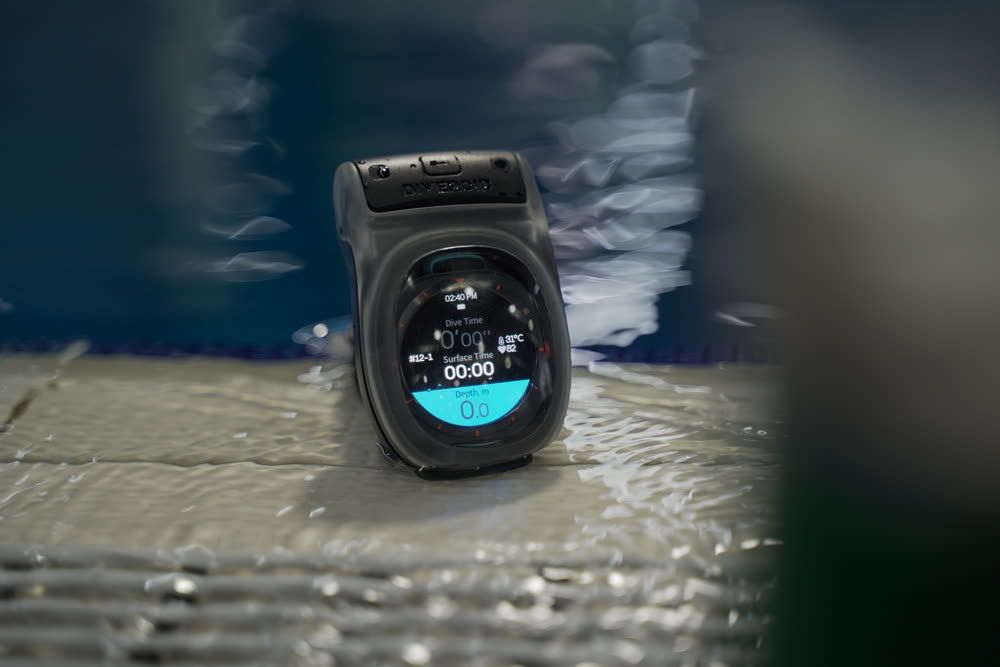
Watch Dive
01 · Introduction
What is Watch Dive?
Watch Dive is a waterproof housing plus a dedicated app that turns the smartwatch you already own — Apple Watch, Galaxy Watch, Pixel Watch and more — into a dive computer. Instead of buying a separate dive computer, you can track depth, dive time, safety stops and your logbook on the watch you already know how to use.
- The most affordable way into a dive computer for new divers
- Depth · dive time · NDL · compass · safety-stop guidance
- Your dive is written to the logbook automatically when you surface
- Works for both scuba diving and freediving
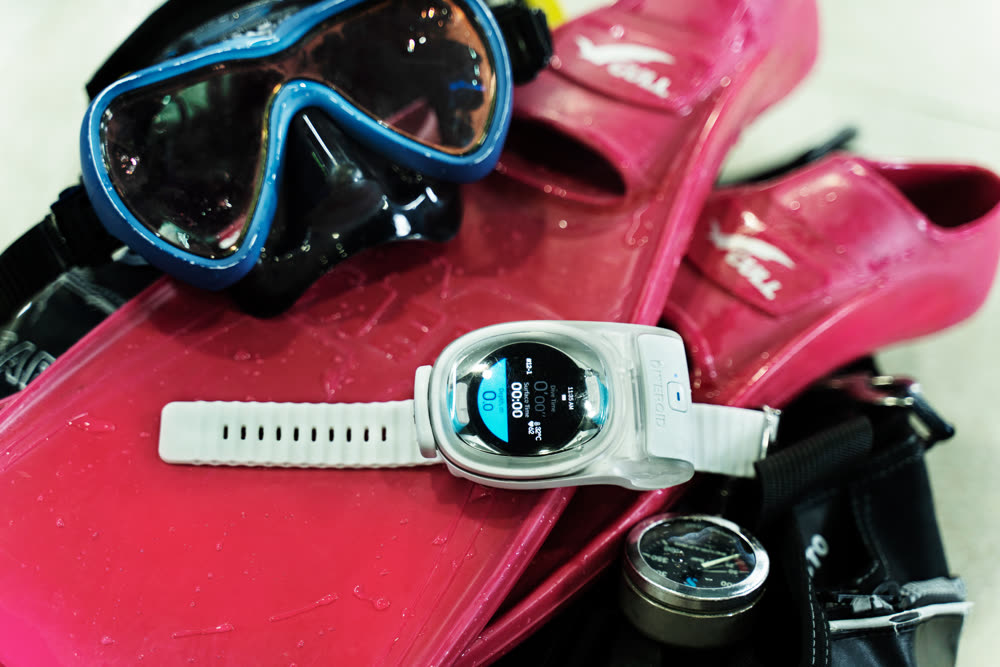
Watch Dive is an aid to diving. It does not replace dive training, certification, or a back-up dive computer. Dive only within the limits of your training and always follow your safety procedures.
02 · Compatibility
Check that your watch works
There are two ways to use Watch Dive. Check which one applies to your watch before you start.
| Configuration | Watch | What you need |
|---|---|---|
| App only |
Apple Watch Ultra 1 · 2 · 3 (built-in pressure sensor · rated for diving) |
DIVEROID app only |
| Housing + app | Apple Watch Series and SE, all Galaxy Watch models (including Ultra), Google Pixel Watch, and other Wear OS watches | Watch Dive housing + app |
The housing has a size limit, so not every watch fits. Please check your exact model against the compatibility list before you buy.
Watches that run a closed operating system of their own — Garmin, Suunto, Fitbit, Amazfit and Huawei, for example — cannot install the DIVEROID app and are not supported.
Look up your model at guide.diveroid.com/watch-compatibility.html.
03 · What's in the box
In the box & specifications
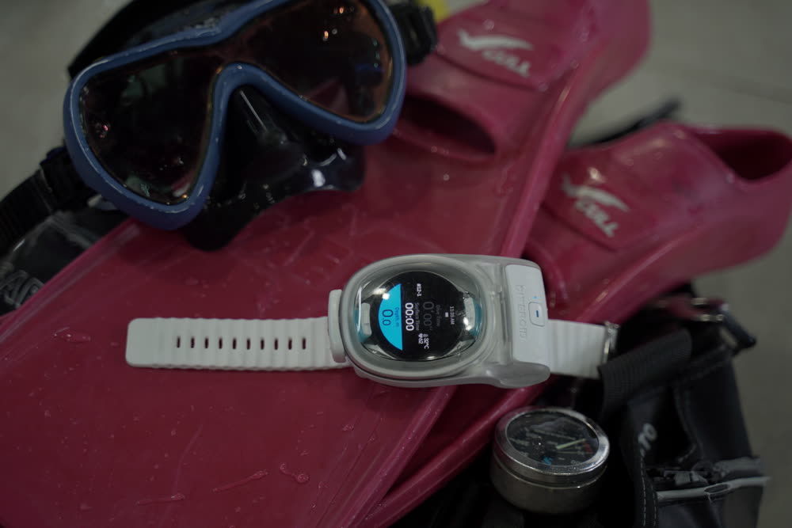
In the box
- Watch Dive housing (battery already fitted inside)
- Wrist strap & buckle
- Toggle latch
Specifications
※ The battery is sealed inside the housing and is not replaced by the user. If it needs replacing, please contact DIVEROID support.
04 · Getting started
Install the app and set up
Search for "DIVEROID" on the App Store or Google Play and install it. Have both your watch and your phone to hand.
Dive mode needs Bluetooth switched on — this is how the housing and the watch talk to each other.
Follow the prompts in the app to register the watch you are using.
Flight mode keeps notifications and calls from interrupting your dive display. Once it is on, closing the housing takes you straight into dive mode.
05 · Housing
Using the housing
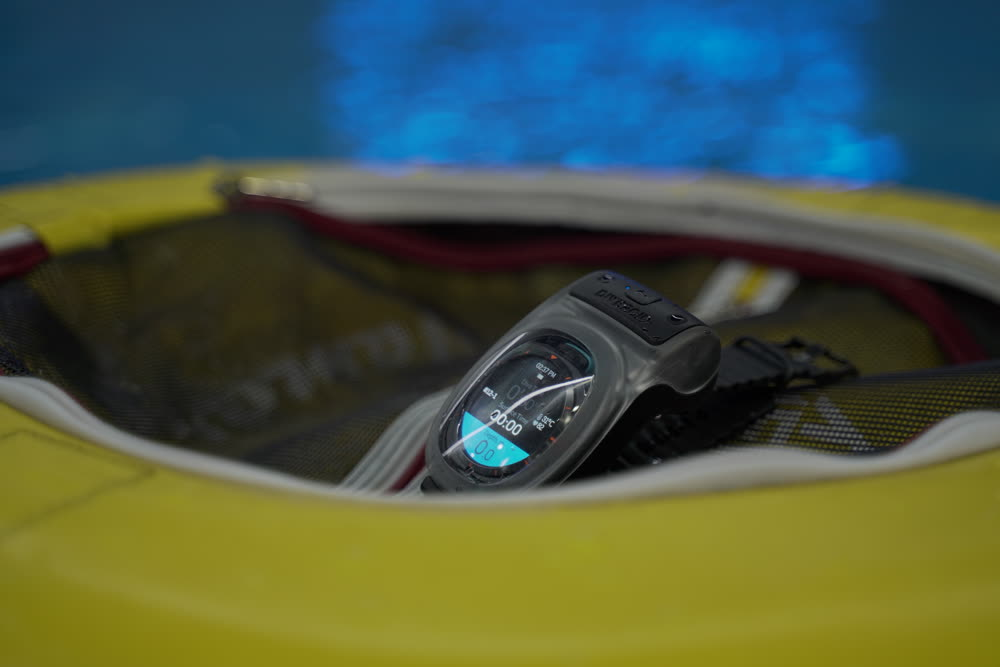
Fitting the watch and closing up
Once the housing is closed, the app enters dive mode automatically and begins showing the depth and water temperature measured by the housing.
Operating the watch through the housing
You can operate the watch display using the housing button with the housing fully closed — no need to open it, and it works with gloves on. The button distinguishes a short press from a long press of 2 seconds or more, and what each one does depends on the screen you are looking at.
| Screen | Short press | Long press (2 s) |
|---|---|---|
| Leak-prevention test | Run the test again | Skip the test |
| Dive screen | See the on-screen prompt | Switch to the compass screen |
※ On any other screen, follow the prompts shown on the watch.
Leak-prevention test before you get in
Watch Dive can watch its own internal pressure to confirm that the seal is good before you enter the water. We recommend running this test before every dive.
It watches for up to 60 seconds, and passes as soon as the pressure has held steady for 30 seconds without interruption. If the housing settles quickly it finishes in a little over 30 seconds; if it cannot reach a steady stretch within 60 seconds, it reports a failure.
If a pressure change is detected, open the housing, clean the O-ring, re-seat it properly, close up and run the test again.
※ On the test screen, a short press starts the test over and a long press of 2 seconds or more skips it — but skipping means entering the water without having confirmed the seal.
Before entering the water, look at the depth on the watch and confirm that it reads 0.0 m. The surface reference has to be right for depth to be shown correctly during the dive and for the dive to be saved to your logbook afterwards. If it does not read 0.0 m, do not use this product as your depth reference — go by your back-up instrument.
06 · How to use
From the start of the dive to the end
On an actual dive you will go through the steps below. The watch guides you through each one automatically.
Do take a moment to confirm the dive was saved to your logbook.
07 · Features
Key features
Dive computer
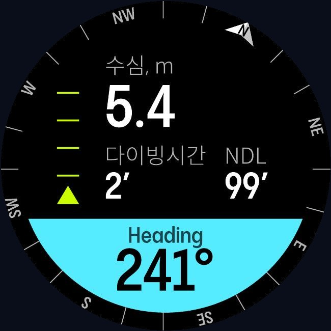
The dive screen shows current depth · maximum depth · dive time · NDL (no-decompression limit) · water temperature · ascent rate · compass · housing battery together, in real time. If you incur a decompression obligation, NDL is replaced by time to surface (TTS).
Decompression is calculated with Bühlmann ZHL-16C, a model widely used across the diving industry, and both scuba diving and freediving are supported.
※ These are real app screens (Wear OS). What you see may differ depending on your watch model and settings.
Automatic logbook
When a dive ends, the date · location · weather · maximum depth · dive time · water temperature · breathing gas (air / nitrox) are written to your logbook automatically. Freedives are recorded with water temperature as well.
Your photos and videos, sorted automatically
Watch Dive has no camera of its own. What it does instead is match photos and videos from a separate camera — a GoPro, a Canon, whatever you shoot with — to the right dive by the time they were taken, so you never have to work out which dive a photo came from.
08 · Safety
Safety features
Watch Dive signals risky situations on screen and audibly while you dive. Below are real app screens.
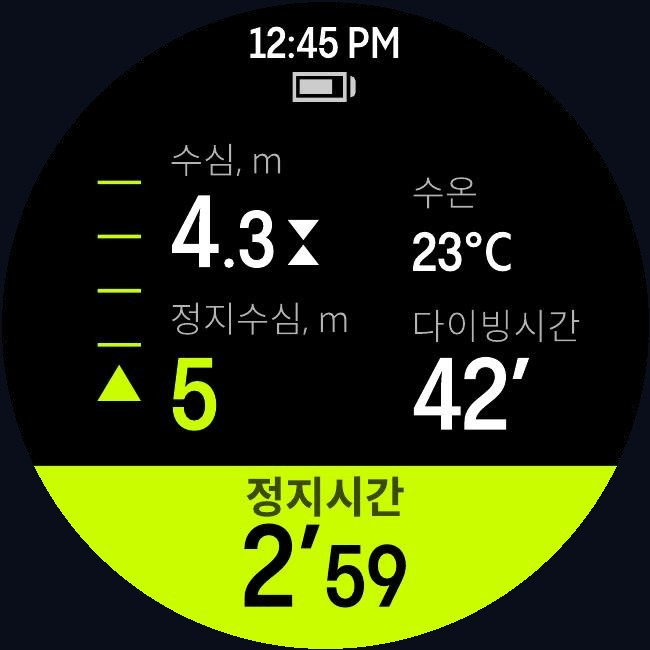
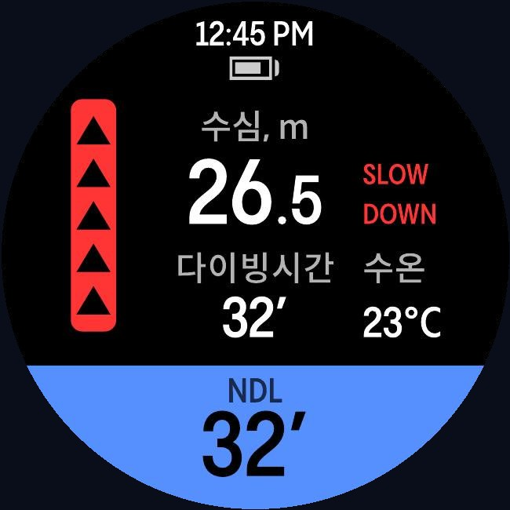
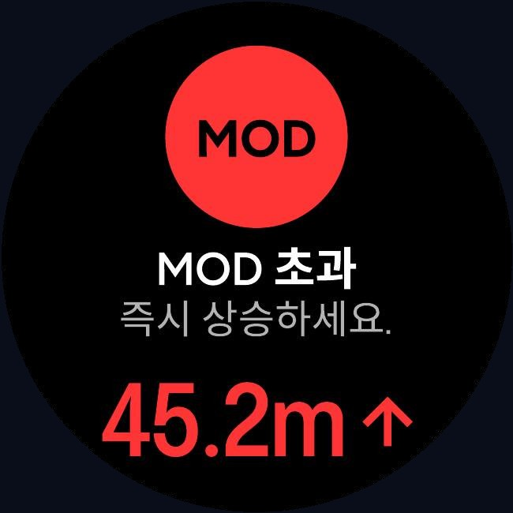
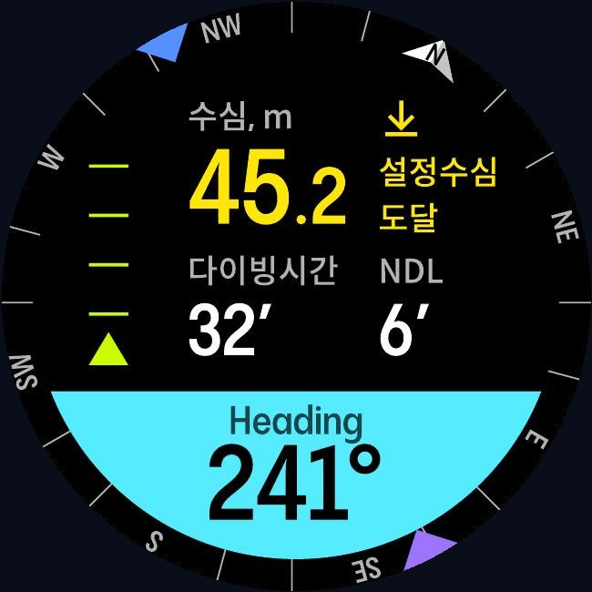
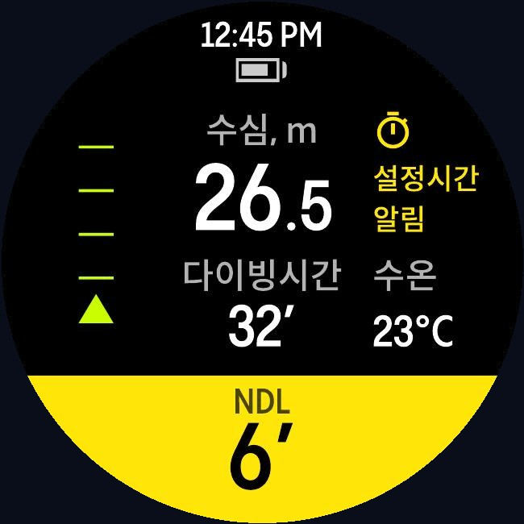
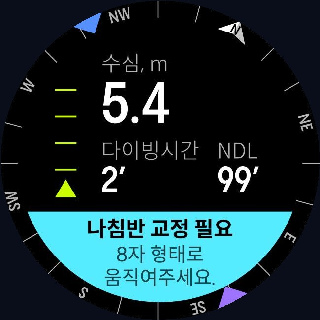
- Safety-stop guidance — tells you the stop depth and how long to hold it.
- Ascent-rate warning — warns you when you are coming up too fast.
- MOD warning — warns you when you go past the maximum operating depth of your breathing gas.
- Spoken time-to-surface (TTS) — reads out the time remaining so you can hear it.
- Depth and time alarms — alerts you at the depth or dive time you set yourself.
- Decompression and missed-stop warnings — tells you when you have gone past your no-decompression limit and incurred a decompression obligation, and warns you if you miss a required decompression stop.
- Post-dive guidance — shows your surface interval and no-fly time.
When an ascent-rate, MOD or decompression warning appears, act on it immediately according to your training. In particular, do not continue a dive while a missed-decompression-stop warning is showing. The guidance Watch Dive gives is for reference; your own judgment and your dive training come first.
Always dive with an independent back-up means of reading depth and elapsed time — dive tables or a second dive computer. Electronic equipment, batteries and wireless links can fail without warning.
The depth, time and decompression information this product shows applies only to the diver wearing the housing. Never apply it to another diver.
09 · Care
Care & storage
After every dive
- Rinse the housing thoroughly in clean fresh water with it still closed, to remove salt and sand. Work the buttons a few times while rinsing so salt cannot crystallize around them.
- Dry it completely before opening it. Wipe the water away from around the O-ring in particular, so none of it runs inside.
- Take the watch out, then leave the housing open to dry in the shade.
O-ring care
- Inspect the O-ring before every dive. One grain of sand or a single hair is enough to let water in.
- Clean the O-ring and its groove with a soft, lint-free cloth. Never use a pointed metal tool to lever it out.
- Replace it as soon as you see a flat spot, a cut or any distortion. If it needs lubricating, use a diving-grade silicone grease and apply only the thinnest film — too much grease attracts sand and causes the very leak you are trying to prevent.
Storage
- Store it somewhere cool and dry, out of direct sunlight and away from heat.
- Store it open and unlatched. Left closed for long periods, the O-ring takes a set under compression and no longer seals properly.
- Protect the clear window from scratches when carrying it.
- Never use solvents, alcohol, abrasive cleaners or a dishwasher — they will damage the housing.
If you have dropped it, it has taken a hard knock, or you suspect water got inside, run the leak-prevention test to confirm the seal before you dive with it again. Do not use a product with a cracked window or a deformed latch — contact support instead.
10 · FAQ
Frequently asked questions
11 · Warranty
Warranty
If a manufacturing defect appears under normal use, we will repair or replace the product free of charge within the warranty period from the date of purchase.
Not covered by the warranty
- Damage from misuse, drops or impact
- Damage from use beyond the rated depth of 60 m
- Faults caused by unauthorized disassembly or modification
- Flooding or failure caused by opening the sealed interior
- Normal wear of consumable parts such as the O-ring and strap
Warranty & service enquiries: help@diveroid.com